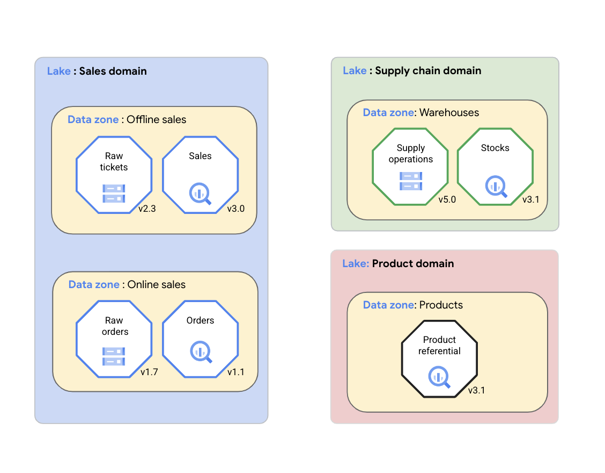
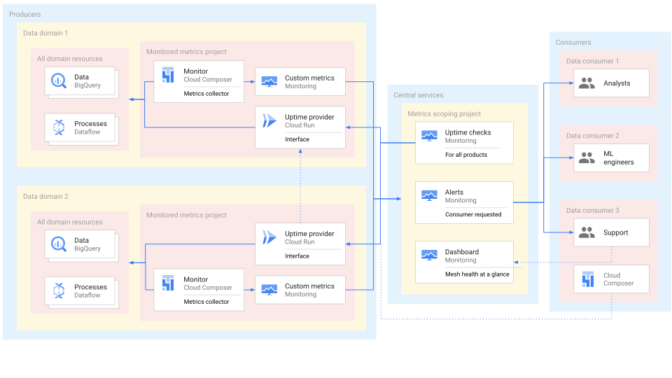

Content Outline
- Why a self-service platform is required to scale a data mesh.
- How platform solutions and common services support domain teams.
- How IaC templates standardize secure product provisioning.
- How consumption interfaces are exposed and consumed consistently.
- How Dataplex supports centralized governance in distributed domains.
- How observability improves trust and operational reliability.
Platform Purpose and Scope
A self-service data platform enables domain teams to create and evolve data products faster while reducing duplicated infrastructure work.
The platform provides reusable capabilities and operational guardrails so teams can focus on domain value rather than low-level platform engineering.
Platform Architecture Components
The architecture combines composable platform solutions and shared common services.
- Platform solutions: reusable building blocks for frequent product delivery scenarios.
- Common services: catalog, governance, observability, and cross-domain operational support.
- Team interfaces: producer and consumer workflows integrated with platform controls.

IaC-Driven Delivery Model
Infrastructure-as-code templates provide a consistent path to provision environments, interfaces, and security controls.
Vetted template modules reduce risk and make deployments repeatable across domain teams.
- Use template modules for foundational cloud resources.
- Embed organizational guardrails and policy defaults.
- Continuously validate templates through automated checks.
- Promote discoverable, composable patterns for team autonomy.
Consumption Interface Design
Data products are exposed through explicit interfaces that define quality expectations, access constraints, and compatibility boundaries.
Interfaces can use views, APIs, files, or streams depending on performance and usage requirements.
- Separate producer internals from consumer-facing contracts.
- Choose interface type based on latency and scale profile.
- Version interfaces to manage change safely across domains.
- Preserve discoverability through clear metadata and documentation.
Dataplex for Governance and Catalog
Dataplex provides centralized governance and metadata capabilities while allowing domain teams to maintain ownership of their assets.
Lakes and zones help structure assets logically, enforce policy boundaries, and support quality and classification workflows.

Data Observability Capabilities
Observability capabilities make product health and quality visible to both producers and consumers.
Monitoring, alerts, and product-level scorecards improve incident response and trust in data product consumption.
- Define SLIs for freshness, availability, and quality.
- Provide status dashboards for producer and consumer visibility.
- Standardize alerting for degradation and contract drift.
- Use central services to reduce repetitive operational burden.

Operational Support Model
Platform teams should provide support patterns and tooling that scale across many products and consumer teams.
A central support model can include status communication, standardized diagnostics, and reusable runbooks.
Implementation Priorities
A practical rollout starts with a small set of high-impact capabilities and expands based on domain adoption feedback.
- Start from a minimum viable set of reusable templates.
- Add governance automation early, not as a later retrofit.
- Prioritize interfaces and tooling that reduce onboarding friction.
- Measure platform value through delivery and reliability outcomes.
Key takeaways
- Self-service platforms accelerate domain delivery by standardizing common capabilities.
- IaC templates are essential to secure, repeatable, and scalable product provisioning.
- Consumption interfaces define the contract between producers and consumers.
- Dataplex strengthens governance and discoverability across distributed domains.
- Observability services increase trust and reduce operational uncertainty.
Web Source
Reference page: https://docs.cloud.google.com/architecture/design-self-service-data-platform-data-mesh